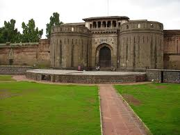
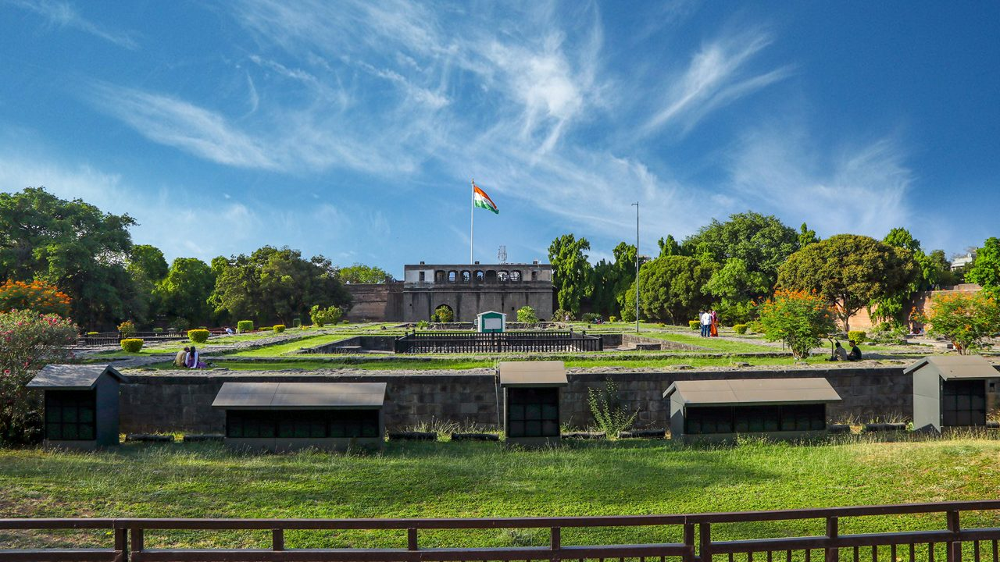
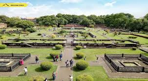

शनिवार वाडा
Location : Click Here For Google Map
- माहिती
- शनिवार वाडा, पुणे शहरातील एक ऐतिहासिक किल्ला आहे, जो मराठा साम्राज्याच्या स्थापनेशी संबंधित आहे. या किल्ल्याचे निर्माण १७३० मध्ये भोसले कुटुंबाने केले. किल्ल्याची उंची सुमारे ३० मीटर (१०० फूट) आहे, आणि त्याच्या भव्य प्रवेशद्वारामुळे तो एक प्रमुख पर्यटन स्थळ बनला आहे. वाड्यात एक महत्त्वपूर्ण आणि ऐतिहासिक बाजीराव पेशवांचे कक्ष आणि दुर्गाची संरचना आहे. शनिवार वाडा विशेषतः त्याच्या ऐतिहासिक महत्त्वामुळे प्रसिद्ध आहे आणि आजही त्या काळातील वास्तुकला आणि सांस्कृतिक वारशाचे प्रतीक म्हणून उभा आहे. किल्ल्याच्या परिसरात एक प्रसिद्ध बगीचा आहे, तसेच काही लहान मंदिरे देखील आहेत. शनिवार वाडा आज एक प्रमुख पर्यटन आकर्षण आहे आणि पुण्यातील एक ओळखले जाणारे ठिकाण आहे.
Explore the historical beauty


